Four fixes for the shipped Home search. Rendered from main cc89ad77 with the shipped tool rows; the dropdown is drawn over Home as it opens under the panel's field. Deck names and art are illustrative.
17 · Bigger tool marks (R12)
Today the wrench is 18px in a 40px tile (phone) and a 30px tile (desktop). Proposed: 28px in a 48px tile on a phone, 24px in a 40px tile in the dropdown. The row heights stay 72px and 58px, so tools and cards still read as one list.
Q19 · Tool mark size
A: 28px in 48px (phone), 24px in 40px (desktop), drawn. B: a smaller step, 24px in 44px (phone) and 22px in 36px.
Recommended: A. It reads as an icon at a glance without making the row taller.
Desktop · 1300
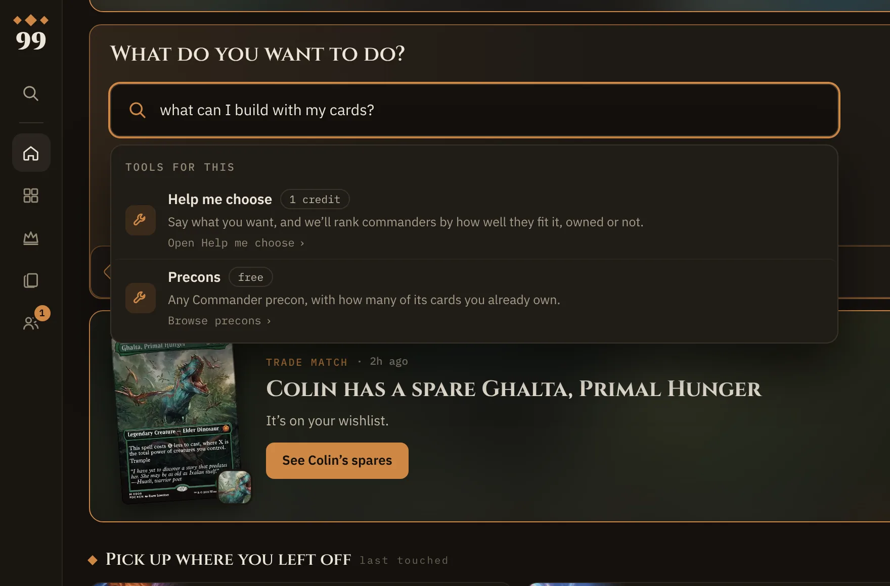
Today
18px wrench, 30px tile.
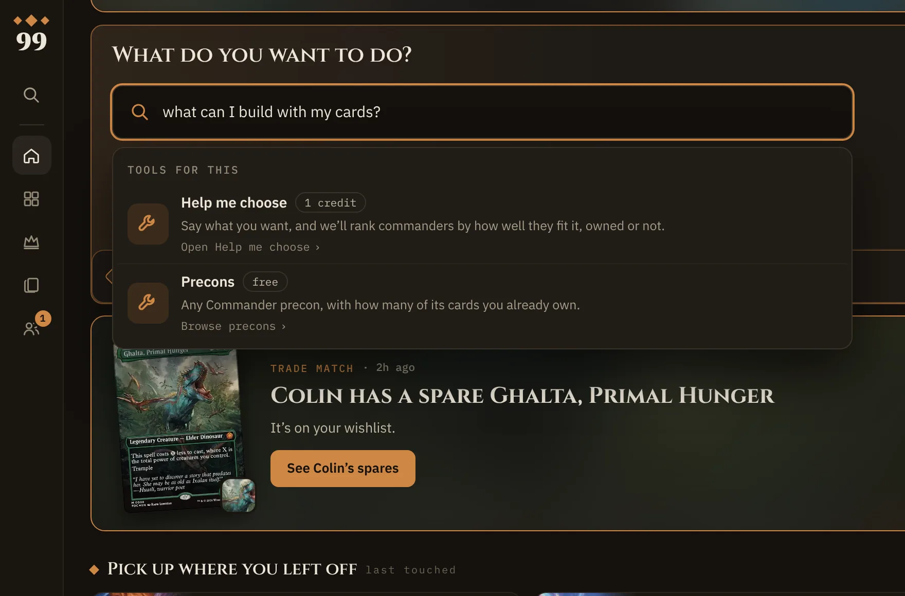
Proposed
24px wrench, 40px tile.
Phone · 390
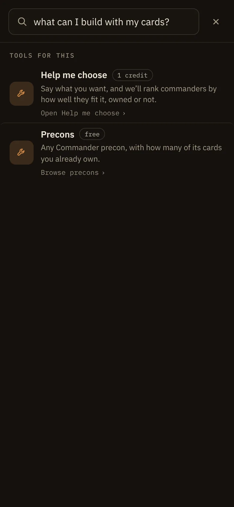
Today
18px in 40px.
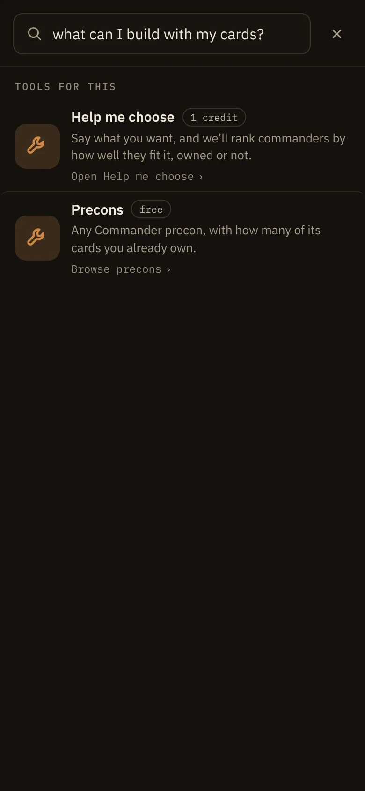
Proposed
28px in 48px.
18 · A press opens now, or says it is opening (R12)
Today a press closes the search, then waits for the page: Precons can take a second or two with nothing on screen.
Proposed: the search stays up until the new page commits. The pressed row rings in the accent, its tile turns to a spinner, its foot reads Opening Precons…, the other rows dim, and the shipped search progress bar runs across the top. Then the search closes onto the page. A fast page closes it at once, so most presses look immediate.
Esc or ✕ still closes and cancels; a failed load puts the row back and shows the shipped toast.
Q20 · What a press does while the page loads
A: the search stays up with the row in its Opening state until the page commits (drawn). B: close at once and lean on each page's own skeleton.
Recommended: A. Not every page has a skeleton; the row the reader pressed is where their eyes are.
Pressed Precons
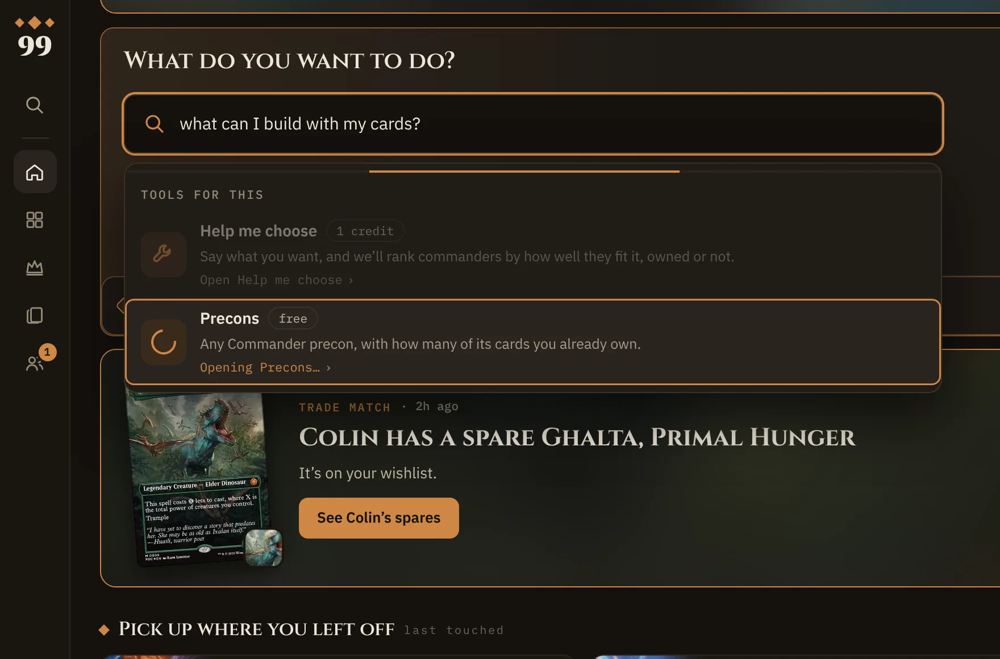
Desktop · Opening
Ring, spinner, Opening Precons…, the bar across the top.
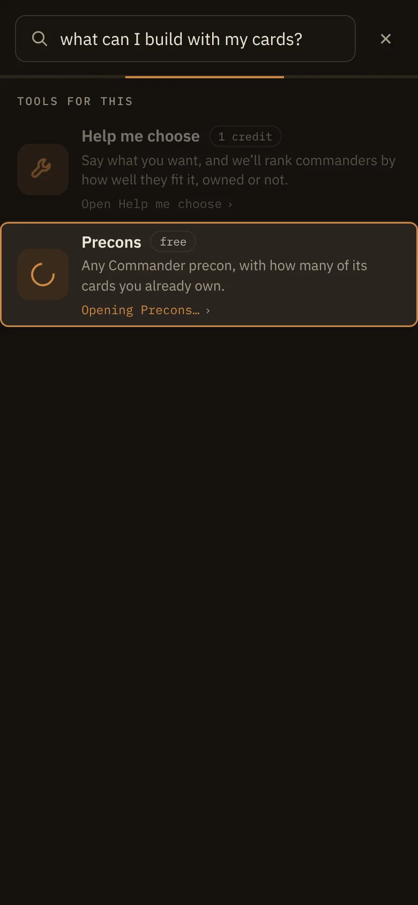
Phone · Opening
The same in the sheet.
19 · Pick a deck, inside the search (R12)
Today a deck tool that fits several decks opens the most recent one (in Ashen Banner Parade +3), so the reader cannot choose.
Proposed: its foot reads Pick a deck · 4 can use it. A press swaps the answers for a picker in the same box: ‹ Answers, the tool's name and cost, Which deck? 4 of yours can use it., then the decks that fit, last touched first, each with its commander art, name, commander and when it was edited. A deck opens the tool on that deck, with the same Opening state.
One deck that fits still goes straight there. ↑ ↓ and Enter work through the picker; Backspace or ‹ Answers goes back.
Q21 · A tool that fits several decks
A: pick the deck inside the search (drawn). B: open the most recent deck as today, with a deck switcher on arrival.
Recommended: A. The choice is made before any page loads, and a credit tool never runs on the wrong deck.
Desktop · 1300
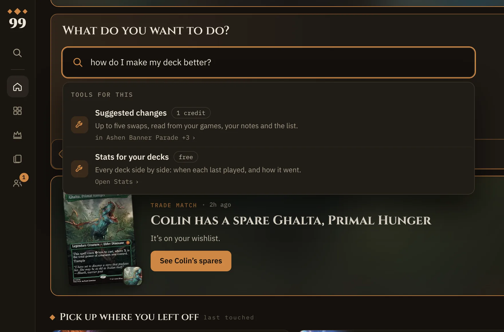
Today
in Ashen Banner Parade +3: a press opens that one.
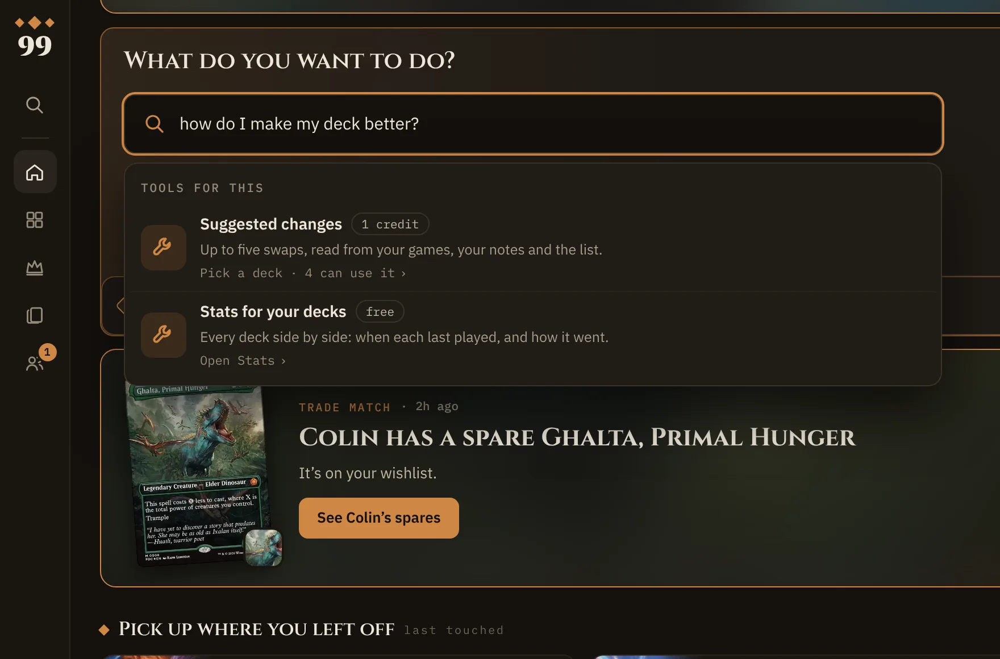
Proposed · answers
Pick a deck · 4 can use it.
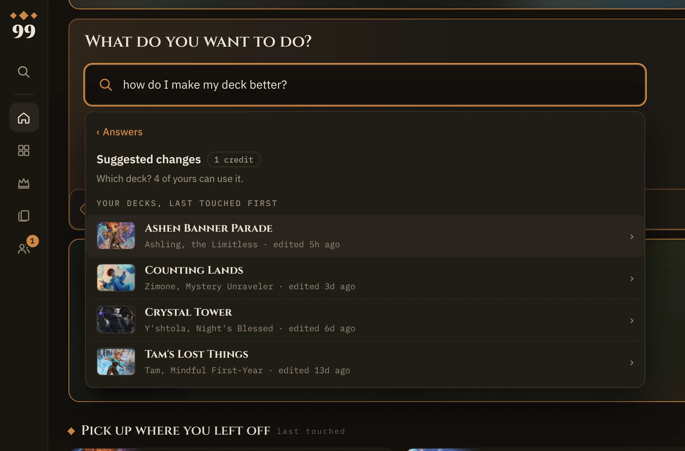
Proposed · the picker
Last touched first; a deck opens the tool on it.
Phone · 390
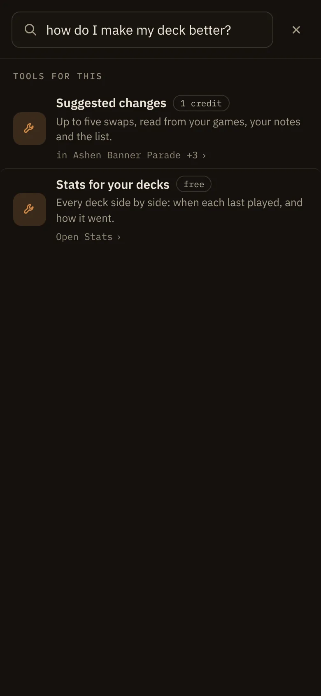
Today
The first deck only.
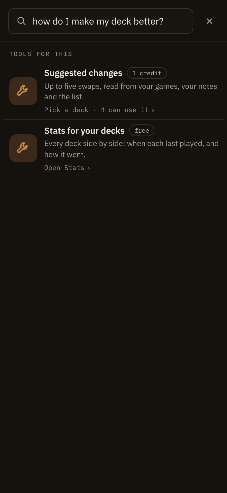
Proposed · answers
Pick a deck.
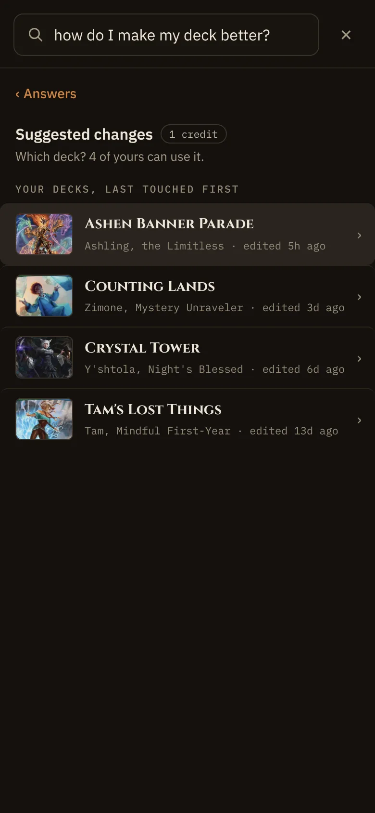
Proposed · the picker
In the sheet; ‹ Answers goes back.
20 · A highlight only where there is something to find (R12)
Halo when the tool is one part of a busier screen: Suggested changes, Proposed cuts, Mana Balance and Consider (Tuning tiles), Top off, Cheaper stand-ins and Friends' spares (the deck's Shopping view), Matchups (Games), Find a deck (the Free chip).
Help me choose rings its new intro panel (#3266: what it does, the example, three steps, free against credits) instead of the color picker, for a reader who has not run it yet. After the first run the panel folds to one line, and the landing rings nothing.
No halo when the page is the tool: Precons, Wishlist, Collection Sync, Stats for your decks, Friends. Those land at the top of the page, nothing ringed.
Q22 · When the landing highlights
A: on a busier screen, and on Help me choose's intro until the first run; none where the page is the tool (drawn). B: always, as shipped.
Recommended: A. The ring points at what explains the tool, never at a single answer like the colors.
Keeps its halo · Suggested changes on Tuning
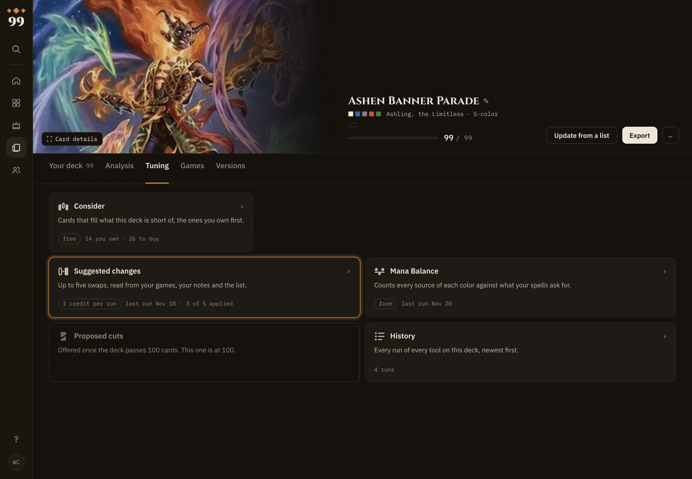
Desktop
The tile is one of five.
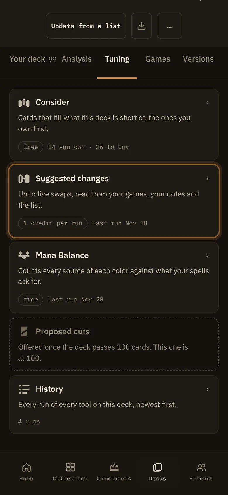
Phone
Scrolled to the tile.
Help me choose · desktop
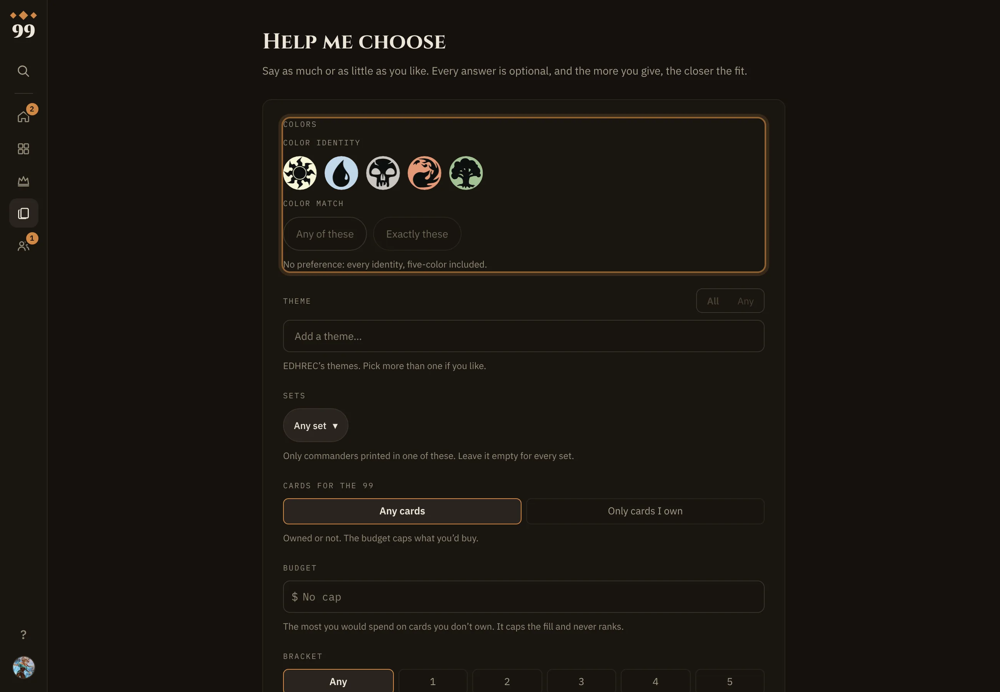
Today
The colors ringed: one answer of many.
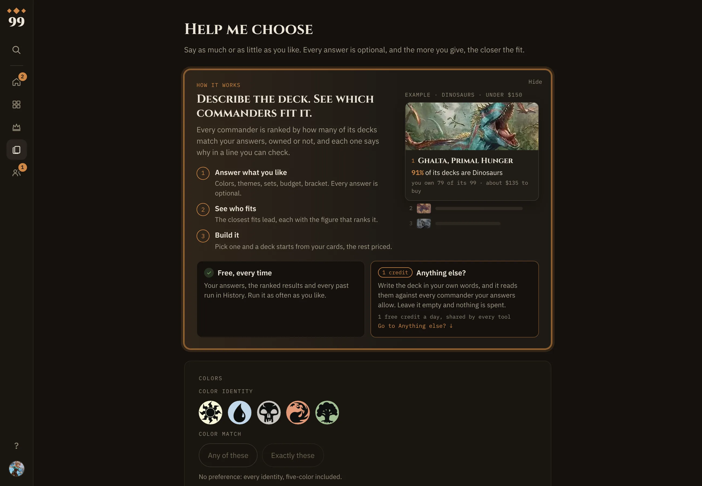
Proposed
The intro panel ringed (#3266), the page at the top.